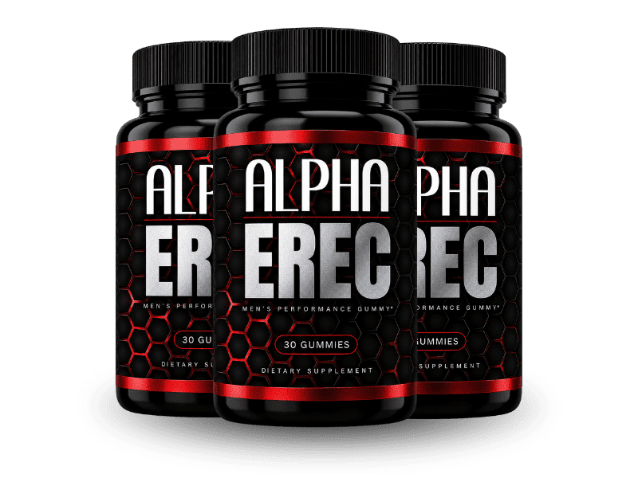

What Is AlphaErec And How Does It Work?
Ask five different men why performance started slipping and you'll get five different answers — bad circulation, low T, just being tired. All five are usually a little bit right, which is exactly the problem.
Three separate systems keep a man's performance running: blood flow, natural testosterone output, and the raw cellular energy behind stamina. Think of them as three engines bolted to the same car. After 40, they don't stall out one at a time — they all lose a little compression together, quietly, for years. Fix the fuel line and the timing's still off. Fix the timing and the fuel line's still weak. Chase one engine alone and the car still won't hit highway speed. That's the triple fade, and it's why a man can try a blood-flow pill, feel nothing, and walk away convinced the whole category is a scam — when really he only touched one of three engines.
AlphaErec is built around all three at once instead of betting on one. It's a berry-flavored daily gummy, 30 to a bottle, formulated with nine clinically studied botanicals split across the fade: compounds that support nitric oxide for circulation, adaptogens that take pressure off the cortisol suppressing natural testosterone, and roots that fuel cellular stamina.
Nothing here is a same-night stimulant, and nothing is a synthetic hormone shortcut. It's a daily formula that works alongside systems the body already runs, which is exactly why the timeline runs the way real physiology does — energy first, performance later, and only with consistent use.
AlphaErec Ingredients
Nine actives, three engines, nothing wasted on filler.
- L-Arginine HCl: The raw material the body converts into nitric oxide, the molecule that relaxes vessel walls and opens circulation where it's needed most.
- L-Citrulline: Picked up by the kidneys and converted into L-Arginine with better absorption, which stretches nitric oxide support out over more of the day.
- Ashwagandha Root: An adaptogen studied for bringing cortisol down — the stress hormone that quietly caps how much testosterone the body is willing to produce.
- Tribulus Terrestris: Works on the luteinizing hormone pathway, the internal signal that tells the body to step up its own testosterone output.
- Epimedium: Delivers icariin, a compound with a long traditional track record in sexual performance and confidence.
- Fenugreek Extract: Slows the enzyme that turns testosterone into estrogen, so more of what the body makes stays in its usable, free form.
- Maca Root Extract: A Peruvian root tied to libido and sexual function through a pathway that runs independent of hormone levels entirely.
- Panax Ginseng: A heavily studied adaptogen doing double duty — supporting nitric oxide synthesis on one side, cellular energy and fatigue resistance on the other.
- Zinc + Vitamin D3: Two nutrients a large share of men run short on without realizing it. Zinc feeds testosterone synthesis directly; Vitamin D3 acts as a hormone precursor the whole system leans on.
Line the nine up against the three engines and the design isn't subtle: two for circulation, four for testosterone, three closing energy and nutrient gaps most diets leave open. That's the triple fade worked from all three sides, not one dial cranked while the other two sit dark.
AlphaErec Side Effects
There isn't a single ingredient on that list your body hasn't already met.
Every active in AlphaErec is a botanical extract, amino acid, or nutrient the body processes as part of normal metabolism — not a synthetic compound built to force a system past its own limits. That's a different experience than a prescription route, where side effects tend to show up fast and unwanted.
Production standards back it up. AlphaErec is made in the USA inside an FDA-registered, GMP-certified facility, the kind of oversight that keeps a gummy formula consistent bottle to bottle. Among men using it as directed, there's no widespread pattern of adverse reactions on record.
As with any dietary supplement, check with a healthcare professional first if you have an existing medical condition or take prescription medication.
AlphaErec Dosage
The whole daily routine fits in one gummy.
Take it with or without food — most men fold it straight into breakfast, next to the coffee, so it hitches a ride on a habit that's already automatic. Berry flavor, no capsule to choke down, which sounds small until it's the difference between a routine that sticks and one that quietly falls off after a week.
One bottle covers 30 days. Because the triple fade builds up over years, unwinding it runs on a similar clock — most men notice energy shifting inside the first two weeks, with the performance side catching up between weeks three and six as the botanicals accumulate. That's the reason the multi-bottle options built around a 90-day run are what most men land on instead of judging a single bottle right as the effect was starting to arrive. The larger kits also carry free shipping and a lower cost per bottle than ordering one at a time.
Stick to one gummy a day — that's the dose the formula was built around, and there's no benefit to doubling up.
AlphaErec – Refund Policy
Every order carries a 60-day money-back guarantee.
Set that window against the formula's own timeline: most men are only reaching the performance phase around week six. A 60-day guarantee doesn't just cover a quick trial — it covers the entire runway the product needs to actually show up, which is longer than most supplements in this category offer.
Full terms and the refund request process are listed on the official AlphaErec website.
AlphaErec Customer Reviews
 James Weldon
Phoenix, AZ
Verified Purchase – 6 Bottles
James Weldon
Phoenix, AZ
Verified Purchase – 6 Bottles
"Work stress had quietly tanked everything. I was 47 and gassed out halfway through what used to be easy, running on fumes by mid-afternoon most days. I figured that was just what 47 felt like now. Inside two weeks my energy was noticeably different, and about a month in the rest caught up too. Didn't expect it to carry over to the gym, but it did — I'm stronger there than I've been in years. On my third bottle now, ordering the 6-pack this time because I'm not stopping."
 Gary Whitfield
Tulsa, OK
Verified Purchase – 3 Bottles
Gary Whitfield
Tulsa, OK
Verified Purchase – 3 Bottles
"I'd already tried one of those testosterone booster pills off a gas station rack and it did absolutely nothing, so I was sure this would be the same story — another pump-and-dump gummy with a shiny label. Almost didn't order it. What changed my mind was my wife saying, gently, that something seemed off, and realizing I hadn't been the one to suggest anything in months. Six weeks in, I'm the one bringing it up again. That's the whole review, honestly."
 Dennis Corbin
Tampa, FL
Verified Purchase – 6 Bottles
Dennis Corbin
Tampa, FL
Verified Purchase – 6 Bottles
"I'd looked into TRT but wasn't ready for needles and a standing doctor's appointment every few months, so I kept putting it off instead. AlphaErec felt like a lower-stakes place to start. First noticeable change was just not feeling soft everywhere, not just in the gym — more solid, more present. By week seven my wife brought it up before I did, which hasn't happened in a long time. I'm not overthinking it anymore. I'm just there."
AlphaErec – Where To Buy
One thing worth catching before you order: AlphaErec isn't sold through Amazon, eBay, or Walmart.
Bottles that look identical do turn up on those platforms occasionally, and there's no way to confirm from a marketplace listing whether what's actually inside matches the label, how it was stored, or whether it's even the current formula — a real concern for something taken daily over months.
The guarantee rides on this too. The 60-day money-back window only attaches to orders placed through the official channel. A marketplace purchase leaves no record with the manufacturer, which means no guarantee and no support to fall back on if anything's wrong.
Ordering direct keeps all of it intact — the genuine formula, made to the standard described above, with the full guarantee and support attached to your order. Before completing a purchase, confirm you're on the official AlphaErec website.
To ensure you're getting the authentic product, most users choose to visit the official website directly.
Is AlphaErec A Scam?
No — and the ingredient list is the clearest reason why.
A scam formula leans on one cheap, familiar compound and a loud claim. AlphaErec instead spreads nine separately sourced actives across three distinct mechanisms — circulation, testosterone, cellular energy — which costs meaningfully more to source and manufacture than a single-angle product would need to. That only makes sense if the people behind it actually believe the triple fade has to be addressed from all three sides, not just the one that's easiest to market.
The rest of the picture lines up behind that. Manufacturing in an FDA-registered, GMP-certified US facility. A single BuyGoods purchase with no subscription quietly attached at checkout. A 60-day guarantee wide enough to cover the full timeline the formula actually needs.
Where it stops: this is a daily supplement working with the body's own systems, not an overnight fix, and it won't outrun every possible cause of performance decline. If something more serious is at play, a proper medical workup is worth more than any bottle. But if this is really three systems quietly fading together — circulation, testosterone, energy — the math holds up.
If it's not for you, that's genuinely fine — plenty of men handle this a different way. But try it. If nothing's different in 60 days, you send it back and you're out nothing but the time it took to find out. As with any dietary supplement, check with a healthcare professional first if you have an existing condition or take prescription medication.
For those who want to verify product details or check current availability, the official AlphaErec website remains the safest and most reliable option.
